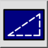
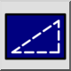
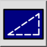
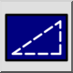

Screen-based Linetypes
Toolbar / Icon:
 

Menu: View > Screen-based Linetypes
Shortcut: N, L
Commands: screenlinetype | nl
Toolbar / Icon:
 

Menu: View > Screen-based Linetypes
Shortcut: N, L
Commands: screenlinetype | nl
Toggles the screen-based linetype mode of the current drawing.
If this mode is activated, linetypes are optimized for a computer
screen. All lines are displayed with a screen based line width
(lines don't get wider when zooming in) and all patterns are shown as fixed,
pixel based patterns on screen (dashes don't get longer when zooming in).
If this mode is off, line widths and linetypes are shown in
drawing units (default).